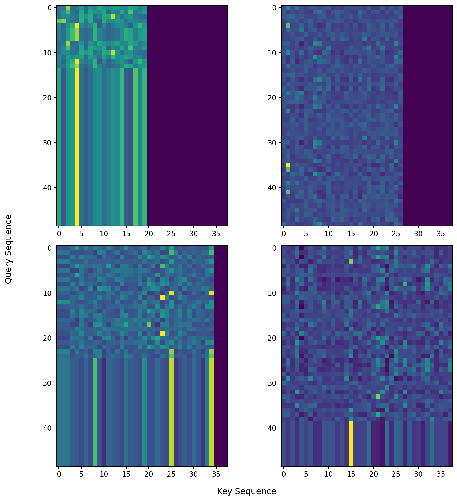

import torch
import torch.nn.functional as F
import pandas as pd
torch.manual_seed(42142)
# random logits as (5, 2) vector
logits = torch.randn(5, 2, requires_grad=True)
# targets as dimension (N,) tensor with class labels
tgt_cls = torch.randint(0, 2, (5,)).long()
# targets as (N, 2) tensor where dimension 1 is a probability distribution with all mass on the correct label
tgt_probs_hard = torch.cat([1 - tgt_cls.unsqueeze(1), tgt_cls.unsqueeze(1)], dim=1).float()
# targets as (N,2) tensor where dimension 1 is a probability distribution (soft targets)
tgt_probs_soft = torch.randn(5,2).softmax(dim=-1)Been a while1, so I’m posting about some random things I had to puzzle through as I did some model training at work. The first is essentially going through the various flavors of cross-entropy in pytorch for training binary/multi-class classification tasks. The second is about the common types of attention masks you might encounter when building a transformer based model in pytorch. Essentially, this whole blog post is a long stackoverflow answer to a question no one asked…listen, I didn’t ask you to click on this article, I’m just trying to pass the time on a Saturday.
Cross-Entropy Variants
There are several variants of cross-entropy in pytorch. While the documentation is very good, I found myself wanting a code example of how exactly they all related (if at all). Specifically, I was doing a binary classification task and wanted to implement possibly class balanced focal loss, a variant of cross-entropy loss, with soft labels. I’ll show how I ended up doing this later, but for now we’ll focus on the core cross-entropy loss.
The loss for binary classification can be accomplished with both the binary and multi-class version of the loss function. I hope to show how to link between the three.
Here are the various cross-entropy-based losses in pytorch:
torch.nn.CrossEntropyLosstorch.nn.BCELosstorch.nn.BCEWithLogitsLoss
And their functional forms, which I wont use, but implement the same calculations:
torch.nn.functional.cross_entropytorch.nn.functional.binary_cross_entropytorch.nn.functional.binary_cross_entropy_with_logits
Lets first make some inputs for these, assuming they are \((N,2)\) logits coming out of some model for a binary classification problem. We also have targets both as a dimension \((N)\) tensor of class labels and a \((N,2)\) tensor of class probabilities, one where all the mass is on the correct class, and one with ‘soft’ labels where the mass is distributed between the two classes.
Now the three losses we want to compare, with no reduction.
cross_entropy_loss = torch.nn.CrossEntropyLoss(reduction = 'none')
bceloss = torch.nn.BCELoss(reduction = 'none')
bce_logits_loss = torch.nn.BCEWithLogitsLoss(reduction = 'none')Lets try to use them all with various inputs and transformations.
CrossEntropyLoss
# helper to grab the gradients induced by a particular loss
def get_grad_and_zero(logits, loss):
loss.mean().backward()
grad = logits.grad.clone()
_ = logits.grad.zero_()
return grad
loss_ce_cls = cross_entropy_loss(logits, tgt_cls)
grad_ce_cls = get_grad_and_zero(logits, loss_ce_cls)
loss_ce_prob_hard = cross_entropy_loss(logits, tgt_probs_hard)
grad_ce_prob_hard = get_grad_and_zero(logits, loss_ce_prob_hard)
loss_ce_prob_soft = cross_entropy_loss(logits, tgt_probs_soft)
grad_ce_prob = get_grad_and_zero(logits, loss_ce_prob_soft)
print(f"Cross entropy loss with just batch dimension: {loss_ce_cls.detach().numpy()}")
print(f"Cross entropy loss with soft targets: {loss_ce_prob_hard.detach().numpy()}")
print(f"Cross entropy loss with probabilities: {loss_ce_prob_soft.detach().numpy()}")Cross entropy loss with just batch dimension: [2.4427776 1.4271057 0.99968183 0.06437338 2.0198019 ]
Cross entropy loss with soft targets: [2.4427776 1.4271057 0.99968183 0.06437338 2.0198019 ]
Cross entropy loss with probabilities: [0.4737186 1.0628904 0.5669178 0.39352775 1.4264644 ]Ok, with reduction = None these all output a \((N,)\) dimensional loss tensor with a per-batch loss. We can replicate the default reduction='mean' by averaging these. CrossEntropyLoss returns the same thing for both class labels and \((N,2)\) hard probabilities, and of course something different for the soft class probabilities. This is consistent with the documentation which handles different formats of the target tensor differently:
tgt_cls: This is the case where we have a dimension \((N,)\) of typetorch.long.tgt_probs_hard: This is the case where we have a dimension \((N,2)\) of typetorch.float. When we pass floats,CrossEntropyLossassumes these are probabilities (between 0 and 1), and that the target tensor is the same shape as the input.tgt_probs_soft: This is the same astgt_probs_hardbut with not all the probability mass on one class.
Ok, all the above seems reasonable. We can perform some sort of binary classification task with any of these. As a sanity check we can also see that the gradients produced by the first two targets are the same:
print(f"Gradients the same for (N,) and (N,2): {(grad_ce_cls == grad_ce_prob_hard).all()}!")Gradients the same for (N,) and (N,2): True!BCELoss
Alright, lets look at the two version of BCELoss, the ones with and without logits. This is where I stumbled a bit, because the format of the input/targets in BCELoss is fundamentally different that that of CrossEntropyLoss. Specifically, the docs say that the input and targets should always be the same shape. WARNING: I’ll have several code examples that either don’t work, or ‘work’ but are not really correct usage for a binary classification task. For instance, the code snippet below throws an error because tgt_cls is not the same shape as logits.
bce_logits_loss(logits, tgt_cls)
# > ValueError: Target size (torch.Size([5])) must be the same as input size (torch.Size([5, 2]))Okay, what about the other targets. BCELoss expects inputs in the interval [0,1], so we have to take care of that. I’ll try a sigmoid and softmax.
# bce with logits, expects just raw logits
loss_bcewl_probs_hard = bce_logits_loss(logits, tgt_probs_hard)
grad_bcewl_probs_hard = get_grad_and_zero(logits, loss_bcewl_probs_hard)
# regular bce, wants inputs in [0,1], use sigmoid to take care of that
loss_bcesigmoid_probs_hard = bceloss(F.sigmoid(logits), tgt_probs_hard)
grad_bcesigmoid_probs_hard = get_grad_and_zero(logits, loss_bcesigmoid_probs_hard)
# regular bce again, use softmax to get values in [0,1]
loss_bcesm_probs_hard = bceloss(logits.softmax(dim=-1), tgt_probs_hard)
grad_bcesm_probs_hard = get_grad_and_zero(logits, loss_bcesm_probs_hard)I’ll do the same but using the probabilities as targets:
## Same as above but with soft targets ##
loss_bcewl_probs_soft = bce_logits_loss(logits, tgt_probs_soft)
grad_bcewl_probs_soft = get_grad_and_zero(logits, loss_bcewl_probs_soft)
loss_bcesigmoid_probs_soft = bceloss(F.sigmoid(logits), tgt_probs_soft)
grad_bcesigmoid_probs_soft = get_grad_and_zero(logits, loss_bcesigmoid_probs_soft)
loss_bcesm_probs_soft = bceloss(logits.softmax(dim=-1), tgt_probs_soft)
grad_bcesm_probs_soft = get_grad_and_zero(logits, loss_bcesm_probs_soft)The first thing to quickly get out of the way is that the only difference2 between BCELoss and BCEWithLogitsLoss is that in BCEWithLogitsLoss the input goes through a sigmoid activation internally. Applying sigmoid to the logits before passing through regular BCELoss produces the exact same result:
# we all good
assert torch.allclose(loss_bcewl_probs_hard, loss_bcesigmoid_probs_hard), "Release the hounds."
assert torch.allclose(loss_bcewl_probs_soft, loss_bcesigmoid_probs_soft), "Call in a drone strike on the reader."
# whhooaaa, close one, dont uncomment this!
# assert torch.allclose(loss_bcewl_probs_soft, loss_bcesm_probs_soft,), "Launch the warheads."
print("Whew! made it!")Whew! made it!Alright, but what does the output look like…is it correct? First, the output is not even the same shape: torch.Size([5, 2]). The losses using sigmoid (either explicitly or internally with BCEWithLogitsLoss) also do not seem to have any relationship to the values as CrossEntropyLoss:
print(f"BCELoss: {loss_bcewl_probs_hard.detach().numpy()}")
print(f"CrossEntropyLoss: {loss_ce_cls.detach().numpy()}")BCELoss: [[3.5669463 0.26643512]
[0.9737141 1.0721908 ]
[1.1070106 0.6140938 ]
[0.28206122 0.18568796]
[1.7221372 0.8846513 ]]
CrossEntropyLoss: [2.4427776 1.4271057 0.99968183 0.06437338 2.0198019 ]The losses for BCELoss when passing in softmax values seems to contain the same values as CrossEntropyLoss, but in two columns:
print(f"BCELoss with softmax and hard targets: \n{loss_bcesm_probs_hard.detach().numpy()}")
print(f"CrossEntropyLoss with hard targets: \n{loss_ce_prob_hard.detach().numpy()}\n")
print(f"BCELoss with softmax with soft targets: \n{loss_bcesm_probs_soft.detach().numpy()}")
print(f"CrossEntropyLoss with soft targets: \n{loss_ce_prob_soft.detach().numpy()}")BCELoss with softmax and hard targets:
[[2.4427779 2.4427776 ]
[1.4271057 1.4271059 ]
[0.99968195 0.9996819 ]
[0.06437341 0.06437336]
[2.0198019 2.0198016 ]]
CrossEntropyLoss with hard targets:
[2.4427776 1.4271057 0.99968183 0.06437338 2.0198019 ]
BCELoss with softmax with soft targets:
[[0.47371858 0.47371864]
[1.0628904 1.0628906 ]
[0.5669178 0.56691784]
[0.39352778 0.3935278 ]
[1.4264644 1.4264642 ]]
CrossEntropyLoss with soft targets:
[0.4737186 1.0628904 0.5669178 0.39352775 1.4264644 ]Whats going on here is that the BCE versions of cross entropy assume dimensions other than the batch dimension are part of a multi-dimensional output, where each element is a separate prediction/target for a binary classification task, not a prediction/probability for a class based on index. Think of an image model that outputs a tensor of size \((N, H, W)\). Pytorch’s implementation of BCELoss would expect you to pass in a \((N, H, W)\) target to perform per-pixel loss calculations before averaging (with reduction='mean') across all pixels/batch indices.
So, when we pass in a size \((N,2)\) input, BCE loss says oh, you have some weird 2-dimensional output per observation, with each of the two values representing a prediction/target for that output index. It is not expecting some probability distribution over 2 discrete values.
So, the softmax into BCELoss doesn’t really make sense, but it just happens to transform the input into something that BCELoss accepts (inputs are in [0,1]). Also, why does it contain the same values as CrossEntropyLoss in two columns?
Well, CrossEntropyLoss is initially passing the input through torch.nn.LogSoftMax and then through torch.nn.NLLLoss. That is, it takes the softmax of the logits, applies the log, then sums along the columns weighted by the (hard or soft) targets. When we softmax the input to BCELoss in the binary case, we essentially replicate this element-wise. Lets take a look at the element-wise loss from BCELoss, ignoring the optional weighting:
\[l_n = y_n \cdot \log x_n + (1-y_n) \cdot \log(1-x_n)\]
First, the \(x_n\) in there has gone through a softmax, and is now having a log applied to it, replicating the torch.nn.LogSoftMax. The rest replicates torch.nn.NLLLoss in the binary case/ What about why the two columns are identical? Well, for each row each element is 1 minus the other element, and it is easy to verify that in this case the loss equation for BCELoss ends up being the same for both elements.
Oh wow, I’ve created a useless wall of text….so how DO we replicate the CrossEntropyLoss binary classification with BCELoss? Well, first off, the best correct way of using BCELoss when you just have a single classification per observation is to have a single output per observation for your model, i.e. your logits should be of size (N,1) and subsequently your targets should be of size (N,1), something like:
logits_single = torch.randn(5, 1, requires_grad=True)
targets_single = torch.randint(0, 2, (5,)).float().unsqueeze(1)
bce_single_output = bceloss(F.sigmoid(logits_single), targets_single)But suppose we just want to see how they would be the same, given we’re committed to softmax. Well, given we’ve seen the output matches when we softmax -> BCELoss but with two duplicate columns….we could just only take one of the columns and call .backwards() based on that:
loss_bcesm_probs_hard = bceloss(logits.softmax(dim=-1), tgt_probs_hard)
loss_bcesm_probs_soft = bceloss(logits.softmax(dim=-1), tgt_probs_soft)
assert torch.allclose(get_grad_and_zero(logits, loss_bcesm_probs_hard[:,1]), grad_ce_prob_hard), "Not even close!"
assert torch.allclose(get_grad_and_zero(logits, loss_bcesm_probs_soft[:,1]), grad_ce_prob), "sudo rm -rf /* --no-preserve-root"
print("Whew, made it!")Whew, made it!We could also just take one column of the softmaxed input and targets and pass those to BCELoss. Note that it doesn’t matter which index we take before we pass, in terms of the gradients; your intuition about how the two values are probabilistic inverses of each other should tell you this. This will however change what a prediction close to 1 means.
loss_bcesm_probs_hard_0 = bceloss(logits.softmax(dim=-1)[:,0], tgt_probs_hard[:,0])
loss_bcesm_probs_soft_0 = bceloss(logits.softmax(dim=-1)[:,0], tgt_probs_soft[:,0])
assert torch.allclose(get_grad_and_zero(logits, loss_bcesm_probs_hard_0), grad_ce_prob_hard), "Not even close!"
assert torch.allclose(get_grad_and_zero(logits, loss_bcesm_probs_soft_0), grad_ce_prob), "sudo rm -rf /* --no-preserve-root"
loss_bcesm_probs_hard_1 = bceloss(logits.softmax(dim=-1)[:,1], tgt_probs_hard[:,1])
loss_bcesm_probs_soft_1 = bceloss(logits.softmax(dim=-1)[:,1], tgt_probs_soft[:,1])
assert torch.allclose(get_grad_and_zero(logits, loss_bcesm_probs_hard_1), grad_ce_prob_hard), "Not even close!"
assert torch.allclose(get_grad_and_zero(logits, loss_bcesm_probs_soft_1), grad_ce_prob), "sudo rm -rf /* --no-preserve-root"Attention and Padding Masks
Part two of this post is making sense of all the different types of attention masks inside both the transformers library as well as base pytorch.
Lets start with imo the easiest to understand, the transformers padding mask. I’ll first load a tokenizer and some random text and pass the text through the tokenizer.
from transformers import AutoTokenizer
import torch
import torch.nn as nn
import torch.nn.functional as F
import matplotlib.pyplot as plt
import matplotlib as mpl
model_name = "distilbert-base-uncased-finetuned-sst-2-english"
tokenizer = AutoTokenizer.from_pretrained(model_name)
# example list of different texts:
texts = [
"I am a sick man...I am a wicked man.",
"And if you be a philosopher, though seated in the whale-boat, you would not at heart feel one whit more of terror, than though seated before your evening fire with a poker, and not a harpoon, by your side.",
"It is a truth universally acknowledged, that a single man in possession of a good fortune must be in want of a wife.",
"We thought we were the only thinking beings in the universe, until we met you, but never did we dream that thought could arise from the lonely animals who cannot dream each other's dreams."
]
KV_texts = [
"Still less did that genius, Napoleon, know it, for no one issued any orders to him.",
"Someone must have been telling lies about Josef K., he knew he had done nothing wrong but, one morning, he was arrested.",
"...this thought, which had until then been but a doubt, became a conviction, and his last words were, 'Maximilian, it was Edmond Dantès!'",
"Like, you take over a small public company and you announce that you are raising $200 million to buy MicroStrategy Inc. stock. Maybe that would be worth $400 million?"
]
inputs = tokenizer(
texts,
padding=True,
truncation=True,
return_tensors="pt",
add_special_tokens=False
)
kv_inputs = tokenizer(
KV_texts,
padding=True,
truncation=True,
return_tensors="pt",
add_special_tokens=False
)inputs has a ‘attention_mask’ key that contains a boolean mask where 1 means ‘this token can be attended to’. This mask is necessary to pass batch inputs to models since different texts can be of different length, and we need to pad the shorter sequences to the max sequence length but also track which tokens are padding and should not be attended to.
print(inputs['attention_mask'])
print(inputs['attention_mask'].shape)
# then we'd pass the attention masks to some huggingface transformers model like:
# outputs = model(**inputs)tensor([[1, 1, 1, 1, 1, 1, 1, 1, 1, 1, 1, 1, 1, 1, 0, 0, 0, 0, 0, 0, 0, 0, 0, 0,
0, 0, 0, 0, 0, 0, 0, 0, 0, 0, 0, 0, 0, 0, 0, 0, 0, 0, 0, 0, 0, 0, 0, 0,
0],
[1, 1, 1, 1, 1, 1, 1, 1, 1, 1, 1, 1, 1, 1, 1, 1, 1, 1, 1, 1, 1, 1, 1, 1,
1, 1, 1, 1, 1, 1, 1, 1, 1, 1, 1, 1, 1, 1, 1, 1, 1, 1, 1, 1, 1, 1, 1, 1,
1],
[1, 1, 1, 1, 1, 1, 1, 1, 1, 1, 1, 1, 1, 1, 1, 1, 1, 1, 1, 1, 1, 1, 1, 1,
1, 0, 0, 0, 0, 0, 0, 0, 0, 0, 0, 0, 0, 0, 0, 0, 0, 0, 0, 0, 0, 0, 0, 0,
0],
[1, 1, 1, 1, 1, 1, 1, 1, 1, 1, 1, 1, 1, 1, 1, 1, 1, 1, 1, 1, 1, 1, 1, 1,
1, 1, 1, 1, 1, 1, 1, 1, 1, 1, 1, 1, 1, 1, 1, 0, 0, 0, 0, 0, 0, 0, 0, 0,
0]])
torch.Size([4, 49])You may have also heard of a ‘causal mask’ used autoregressive models. Huggingface transformers usually handles this type of attention masking internally in decoder style models.
PyTorch Attention
PyTorch handles attention differently than huggingface, I mean christ lets look at the docs of torch.nn.MultiheadAttention and torch.nn.TransformerDecoderLayer. They have the following arguments for attention masks:
torch.nn.MultiheadAttention
key_padding_mask (Optional[Tensor]) – If specified, a mask of shape (N,S) indicating which elements within key to ignore for the purpose of attention (i.e. treat as “padding”). For unbatched query, shape should be (S). Binary and float masks are supported. For a binary mask, a True value indicates that the corresponding key value will be ignored for the purpose of attention. For a float mask, it will be directly added to the corresponding key value.attn_mask (Optional[Tensor]) – If specified, a 2D or 3D mask preventing attention to certain positions. Must be of shape (L,S) or (N⋅num_heads,L,S), where N is the batch size, L is the target sequence length, and S is the source sequence length. A 2D mask will be broadcasted across the batch while a 3D mask allows for a different mask for each entry in the batch. Binary and float masks are supported. For a binary mask, a True value indicates that the corresponding position is not allowed to attend. For a float mask, the mask values will be added to the attention weight. If both attn_mask and key_padding_mask are supplied, their types should match.
torch.nn.TransformerDecoderLayer
tgt_mask (Optional[Tensor]) – the mask for the tgt sequence (optional).memory_mask (Optional[Tensor]) – the mask for the memory sequence (optional).tgt_key_padding_mask (Optional[Tensor]) – the mask for the tgt keys per batch (optional).memory_key_padding_mask (Optional[Tensor]) – the mask for the memory keys per batch (optional).
For fucks sake….okay lets go through these. I’ll begin by making these modules and some embeddings of the text I created above that we’ll use as input. We need a Q, K, V to shove through these attention-based layers. Additionally, I’ll keep with the pytorch documentation and use \(L\) to denote the ‘target’ (query) sequence length and \(S\) to denote the ‘source’ (key/value) sequence length.
d_model = 16
# sequence length for the target (Q)
L = inputs['input_ids'].shape[1]
# sequence length for memory/source (K-V)
S = kv_inputs['input_ids'].shape[1]
mha = nn.MultiheadAttention(embed_dim=d_model, num_heads=4, batch_first=True)
decoder = nn.TransformerDecoderLayer(d_model=d_model, nhead=4, batch_first=True)
emb_layer = torch.nn.Embedding(tokenizer.vocab_size,d_model)
target = emb_layer(inputs['input_ids']) # Q
memory = emb_layer(kv_inputs['input_ids']) # K, VFirst up, the attention arguments for MultiHeadedAttention, we have key_padding_mask and attn_mask.
key_padding_mask is pretty self-explanatory: which elements of the K matrix in attention should we treat as padding, so as not to attend to them? Unlike transformers, pytorch expects a boolean mask where True indicates that we treat that element as padding, or a float mask that is added element-wise before the softmax in the attention operation. We can create either of these from the transformers padding mask like so:
key_padding_mask = kv_inputs['attention_mask'].bool() == False
# as float
key_padding_mask_ft = kv_inputs['attention_mask'].clone().float()
key_padding_mask_ft[key_padding_mask_ft == 0] = -torch.inf
key_padding_mask_ft -= 1
output = mha(target, memory, memory, key_padding_mask = key_padding_mask)This essentially zeros out elements after the softmax operation, which we can see in the returned attention weights from the MultiHeadedAttention forward method in Figure 1.

Okay, what about the attn_mask? This is a more flexible mask that can determine which positions in the ‘source’ sequence are attended to. For instance, perhaps we want something like a causal mask in self attention. Below I use MultiheadAttention to perform self attention with a causal plus padding mask Figure 2.
attn_mask = torch.nn.Transformer.generate_square_subsequent_mask(L)
key_padding_mask_ft = inputs['attention_mask'].clone().float()
key_padding_mask_ft[key_padding_mask_ft == 0] = -torch.inf
key_padding_mask_ft -= 1
output = mha(target, target, target, key_padding_mask = key_padding_mask_ft, attn_mask = attn_mask)cmap = mpl.colormaps.get_cmap('viridis') # viridis is the default colormap for imshow
cmap.set_bad(color='black')
fig, axs = plt.subplots(2,2, figsize=(10,10))
for i, ax in enumerate(axs.ravel()):
tmp_out = output[1][i].clone()
tmp_out[tmp_out == 0] = float('nan')
ax.imshow(tmp_out.detach().numpy(), cmap=cmap)
ax.axis('off')
fig.subplots_adjust(wspace=0.05, hspace=0.05)
fig.tight_layout()Now for the arguments to torch.nn.DecoderLayer - a lot of this is analagous to the arguments in MultiheadAttention. We have tgt_mask and memory_mask, which are both analagous to attn_mask in MultiheadAttention, in that they apply an element-wise multiplicative boolean or additive float causal mask before the softmax operation. tgt_key_padding_mask and memory_key_padding_mask are analagous to key_padding_mask in MultiheadAttention.
Okay but why are there two? The simple answer is that the original decoder block from Vaswani et al. (2017), which is implemented in DecoderLayer, has both a self-attention and cross-attention block3. The arguments with tgt prefix handles attention masking in the self-attention layers, and the arguments with memory prefix handle attention masking in the cross attention. If you look at the source for DecoderLayer, there are simply two MultiheadAttention layers that are passed (target, target, target) and (target, memory memory) for Q, K, V and the tgt and memory masks respectively. The ‘normal’ use case in a decoder is to pass both padding masks, as well as a causal mask for the self-attention layers. Note that in the cross-attention block, we need to provide a dimension \((L, S)\) mask, which is a bit weird…you probably shouldn’t be using this mask.
memory_mask = torch.nn.Transformer.generate_square_subsequent_mask(S)
# pad L-S rows of zeros to memory_mask to make it the 'right' shape.
memory_mask = torch.cat([memory_mask, torch.zeros(L-S, S)], dim=0)
tgt_mask = torch.nn.Transformer.generate_square_subsequent_mask(L)
tgt_key_padding_mask = inputs['attention_mask'].clone().float()
tgt_key_padding_mask[tgt_key_padding_mask == 0] = -torch.inf
tgt_key_padding_mask -= 1
memory_key_padding_mask = kv_inputs['attention_mask'].clone().float()
memory_key_padding_mask[memory_key_padding_mask == 0] = -torch.inf
memory_key_padding_mask -= 1
# example with just a padding mask
out_pad = decoder(
target,
memory,
tgt_key_padding_mask=tgt_key_padding_mask,
memory_key_padding_mask=memory_key_padding_mask
)
# causal mask plus both paddings (this is the 'usual' use case)
out_tgt = decoder(
target,
memory,
tgt_mask=tgt_mask,
tgt_key_padding_mask=tgt_key_padding_mask,
memory_key_padding_mask=memory_key_padding_mask
)
# mask for just the memory, not sure when this would be used.
out_mem = decoder(
target,
memory,
memory_mask=memory_mask,
tgt_key_padding_mask=tgt_key_padding_mask,
memory_key_padding_mask=memory_key_padding_mask
)One question you might have (“ahhh no I don’t have that question actually bec…” - “SILENCE!”) is why there is not a separate mask for the query in the MultiheadAttention module. That is, we prevent attention to certain indices of V by masking them out with a padding mask and another more flexible mask. This is because we dont attend to anything in Q. Q determines, through dot-products with the values of K, which elements of V we attend to. There is no notion of whether we attend to the \(i\)-th element in the sequence of Q, it is simply the thing that determines how much we attend to the other thing (the values V, which happen to be the same thing in self attention).
Still, what about the padding mask? Certainly we must ignore certain elements of the ‘target’ sequence. Sure, when you’ve got your output of target sequence length \(L\), just throw away the padded inputs. Returning to the previous example:
out = mha(target, target, target, key_padding_mask = key_padding_mask_ft, attn_mask = attn_mask)
out_pad_mask = (out[0] * inputs['attention_mask'].unsqueeze(-1)) # (B, L, D) x (B, L, 1) broadcasting last dimension
# suppose we want to average:
denoms = inputs['attention_mask'].sum(axis=-1)
out_mean = out_pad_mask.sum(axis=1) / denoms.unsqueeze(-1)References
Vaswani, Ashish, Noam Shazeer, Niki Parmar, Jakob Uszkoreit, Llion Jones, Aidan N Gomez, Ł ukasz Kaiser, and Illia Polosukhin. 2017. “Attention Is All You Need.” In Advances in Neural Information Processing Systems. Vol. 30. Curran Associates, Inc. https://papers.nips.cc/paper_files/paper/2017/hash/3f5ee243547dee91fbd053c1c4a845aa-Abstract.html.